마케팅 데이터 분석
Domain Knowledge 2 : 광고성과지표
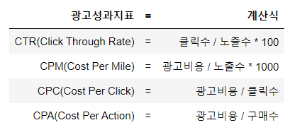
온라인 광고 클릭률(CTR)
광고 클릭률은 클릭수를 광고가 보여진 횟수(노출, Impression)로 나눈 것을 의미하며, 백분율로 나타낸다.예를 들어 방문자에게 배너 광고가 100번 보여지고(100번 노출) 한 번의 클릭이 발생한다면, 그 광고의 클릭률은 1%가 된다.
cpm
CPM은 1000회 노출당 비용을 의미하는 ‘cost per 1000 impressions’의 약자입니다. CPM 광고를 게재하는 광고주는 광고가 1000회 게재될 때 지급하려는 금액을 설정하고 광고를 게재할 특정 광고 게재위치를 선택하고 광고가 게재될 때마다 비용을 지급합니다.
cpc
광고 클릭에 대해 광고주가 지불하는 평균 금액입니다. 평균 클릭당비용(평균 CPC)은 총 클릭 비용을 총 클릭수로 나누어 계산합니다.
평균 CPC는 광고 클릭 1회에 대해 청구되는 실제 비용인 실제 클릭당비용(실제 CPC)을 기반으로 합니다. 평균 CPC는 광고 클릭 1회당 지불할 의사가 있는 최대 금액인 최대 클릭당비용(최대 CPC)과 다를 수 있습니다. 다음은 평균 CPC를 계산하는 방법의 예입니다. 광고 클릭이 2회 발생하여 각각 200원, 400원의 비용이 발생했다면 광고 클릭에 따른 총 비용은 600원이 됩니다. 600원(총 비용)을 2(총 클릭수)로 나누면 평균 CPC인 300원이 산출됩니다.
cpa
광고로부터의 전환에 대해 광고주에게 청구되는 평균 금액입니다. 평균 전환당비용(CPA)은 총 전환 비용을 총 전환수로 나눈 값입니다.
가령 특정 광고에서 2개의 전환이 발생해 하나는 2천 원, 다른 하나는 4천 원의 비용이 소요된 경우 전체 전환에 대한 평균 CPA는 3천 원이 됩니다. 평균 CPA는 실제 CPA(광고로부터의 전환에 대해 청구되는 실제 금액)를 기준으로 합니다. 실제 CPA는 타겟 CPA(타겟 CPA 입찰 사용 시 광고주가 원하는 평균 CPA로 설정한 금액)와 다를 수 있습니다. 캠페인 그룹 내의 모든 캠페인에 대한 평균 CPA 타겟을 설정하려면 실적 타겟을 사용합니다.
imp=10000 #노출수
clk=100 #클릭수
conv=10 #구매수
cost=100000 #광고비용
# ctr
ctr = clk/imp*100
#ctr 출력
ctr
1.0
# cpm
cpm=cost/imp*1000
#cpm 출력
cpm
10000.0
# cpc
cpc=cost/clk
#cpc 출력
cpc
1000.0
# cpa
cpa=cost/conv
#cpa 출력
cpa
10000.0
Matplotlib
- 시각화 라이브러리
# 데이터 분석과정과 시각화
- 머신러닝의 과정
- 데이터 수집
- 데이터 전처리
- 데이터 탐색 ★
- 모델 선택
- 모델 평가 및 적용
# 시각화의 필요성
- 대량의 데이터 파악 가능
- 데이터의 패턴 파악 가능
import matplotlib.pyplot as plt
import pandas as pd
from pandas import DataFrame
from pandas import Series
# matplotlib 한글 폰트 출력코드
# 출처 : 데이터공방( https://kiddwannabe.blog.me)
import matplotlib
from matplotlib import font_manager, rc
import platform
try :
if platform.system() == 'Windows':
# 윈도우인 경우
font_name = font_manager.FontProperties(fname="c:/Windows/Fonts/malgun.ttf").get_name()
rc('font', family=font_name)
else:
# Mac 인 경우
rc('font', family='AppleGothic')
except :
pass
matplotlib.rcParams['axes.unicode_minus'] = False
import pandas as pd
from pandas import DataFrame
from pandas import Series
df=pd.read_excel('naverreport.xls',skiprows=[0]) #skiprows = [행1,행2,..] 를 이용하면 지정한 행을 제외한 나머지 행만 보여준다.
df
| 광고그룹 | 키워드 | 노출수 | 클릭수 | 클릭률(%) | 평균클릭비용(VAT포함,원) | 총비용(VAT포함,원) | |
|---|---|---|---|---|---|---|---|
| 0 | 올인원 패키지 : 디자인 툴_파워컨텐츠_포토샵 | - | 2319456 | 9606.0 | 0.414149 | 261.549448 | 2512444 |
| 1 | 올인원 패키지 : 업무자동화_VBA | - | 767491 | 8058.0 | 1.049915 | 295.974808 | 2384965 |
| 2 | ㅍAOP 전체_중복키워드_디자인(삭제) | 일러스트 | 1137840 | 324.0 | 0.028475 | 4841.663580 | 1568699 |
| 3 | 올인원 패키지 : 데이터 분석 입문 온라인_파콘 | - | 694106 | 1863.6 | 0.268489 | 630.593475 | 1175174 |
| 4 | 3. html | HTML | 9626374 | 813.6 | 0.008452 | 1408.435349 | 1145903 |
| ... | ... | ... | ... | ... | ... | ... | ... |
| 1376 | 올인원 패키지 : 업무자동화_3. 엑셀 | 엑셀셀서식 | 24016 | 0.0 | 0.000000 | 0.000000 | 0 |
| 1377 | 올인원 패키지 : 업무자동화_3. 엑셀 | MATCH | 32287 | 0.0 | 0.000000 | 0.000000 | 0 |
| 1378 | 마케팅KPI수립 | LTV | 32602 | 0.0 | 0.000000 | 0.000000 | 0 |
| 1379 | data_camp_rmp_8 | DECISION | 60844 | 0.0 | 0.000000 | 0.000000 | 0 |
| 1380 | 4. 웹의 동작 | REST | 61193 | 0.0 | 0.000000 | 0.000000 | 0 |
1381 rows × 7 columns
((((df['노출수'].sort_values())/1000).reset_index()).drop('index',axis=1)).plot(figsize=[13,5])
plt.yticks([0,2000,4000,6000,8000,10000],[0,'2,000,000','4,000,000','6,000,000','8,000,000','10,000,000'])
plt.title('노출수 plot',fontsize=20)
plt.show()
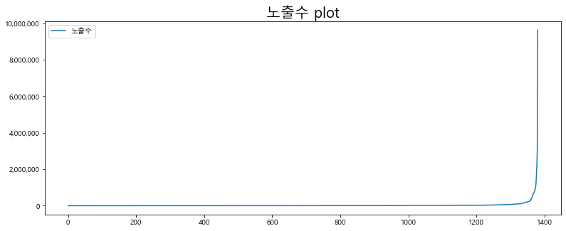
- 시각화 라이브러리 matplotlib
- matplotlib은 pandas의 데이터프레임, 시리즈 자료구조와 함께 사용 가능
- 따라서 데이터 처리와 동시에 시각화도 함께 진행할 수 있음
- 아나콘다(anaconda)를 설치했다면 별도의 설치과정이 필요 없음
# matplotlib import
import matplotlib.pyplot as plt
# pandas, DataFrame, Series import
import pandas as pd
from pandas import DataFrame
from pandas import Series
# matplotlib 한글 폰트 출력코드
# 출처 : 데이터공방( https://kiddwannabe.blog.me)
import matplotlib
from matplotlib import font_manager, rc
import platform
try :
if platform.system() == 'Windows':
# 윈도우인 경우
font_name = font_manager.FontProperties(fname="c:/Windows/Fonts/malgun.ttf").get_name()
rc('font', family=font_name)
else:
# Mac 인 경우
rc('font', family='AppleGothic')
except :
pass
matplotlib.rcParams['axes.unicode_minus'] = False
# 데이터프레임 시각화
#데이터프레임 변수 생성
dict_data={"철수":[1,2,3,4],"영희":[2,3,4,5],"민수":[3,4,5,6],"수진":[4,5,6,7]}
df=DataFrame(dict_data)
df
| 철수 | 영희 | 민수 | 수진 | |
|---|---|---|---|---|
| 0 | 1 | 2 | 3 | 4 |
| 1 | 2 | 3 | 4 | 5 |
| 2 | 3 | 4 | 5 | 6 |
| 3 | 4 | 5 | 6 | 7 |
# 차트 그리기
# 선그래프
df.plot()
plt.show()
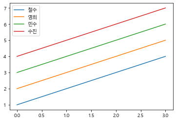
# 막대그래프
df.plot.bar()
plt.show()

# 가로막대그래프
df.plot.barh()
plt.show()
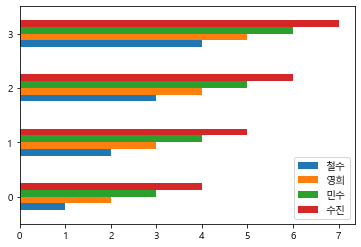
# 히스토그램
df.plot.hist()
plt.show()
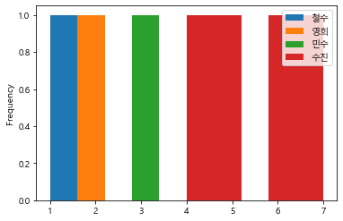
# 히스토그램 구간설정
df.plot.hist(bins=range(1,9,1))# 1부터 9미만 범위 안에 하나씩 증가한다
plt.show()
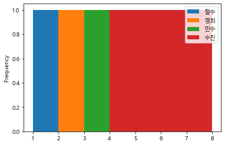
# 차트에 옵션 추가하기
# 기본 막대그래프
df.plot.bar()
plt.show()
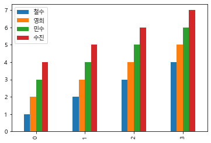
# 그래프 크기 설정
df.plot.bar(figsize=[10,6])#x축,y축
plt.show()
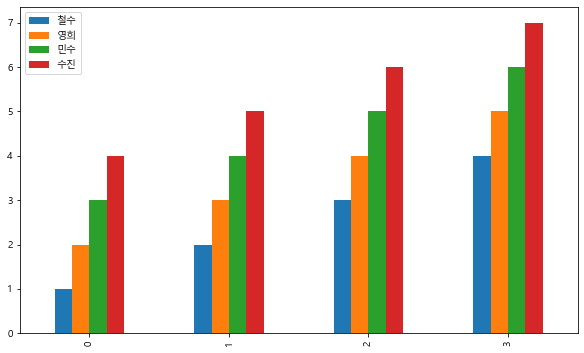
# 제목설정
df.plot.bar(figsize=[11,7])
plt.title('예제')
plt.show()
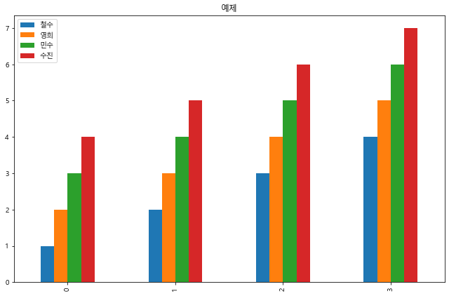
# 제목 폰트 크기 설정
df.plot.bar(figsize=[11,7])
plt.title('예제',fontsize=18)
plt.show()
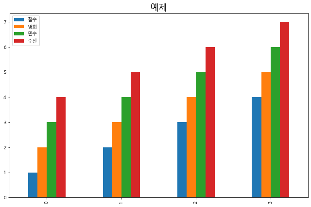
# x축 이름 설정
df.plot.bar(figsize=[11,7])
plt.title('예제',fontsize=18)
plt.xlabel('xlabel')
plt.show()
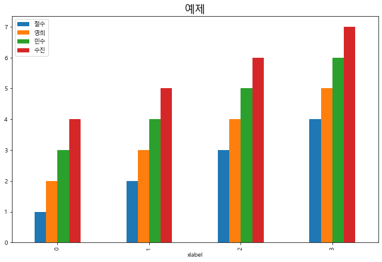
# x축 이름 및 폰트크기 설정
df.plot.bar(figsize=[11,7])
plt.title('예제',fontsize=18)
plt.xlabel('xlabel',fontsize=16)
plt.show()
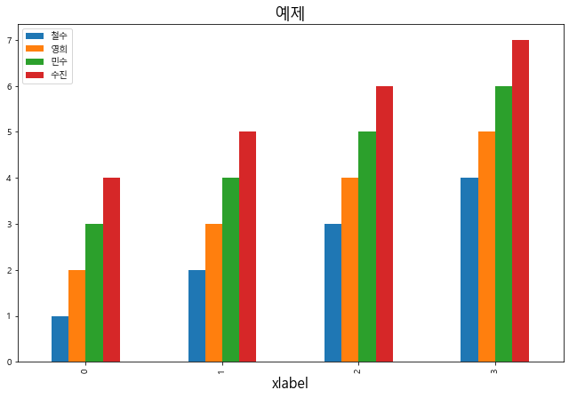
# y축 이름 및 폰트 크기 설정
df.plot.bar(figsize=[11,7])
plt.title('예제',fontsize=18)
plt.xlabel('xlabel',fontsize=16)
plt.ylabel('ylabel',fontsize=16)
plt.show()
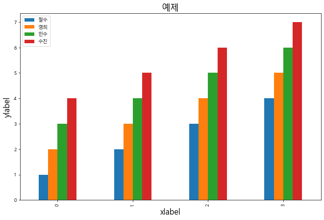
# x축 눈금설정
# 설정할 눈금의 위치, 눈금의 이름, 폰트사이즈, 각도
df.plot.bar(figsize=[11,7])
plt.title('예제',fontsize=18)
plt.xlabel('xlabel',fontsize=16)
plt.ylabel('ylabel',fontsize=16)
plt.xticks([0,1,2,3],['첫째','둘째','셋째','넷째'],fontsize=10,rotation=0) #rotation으로 정상적인 각도로 출력할 수 있다.
plt.show()
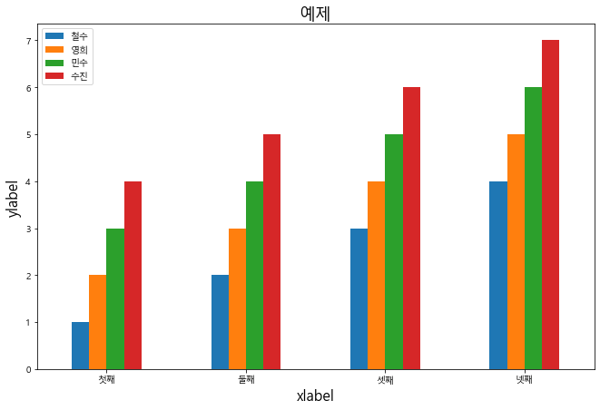
# y축 눈금설정
df.plot.bar(figsize=[11,7])
plt.title('예제',fontsize=18)
plt.xlabel('xlabel',fontsize=16)
plt.ylabel('ylabel',fontsize=16)
plt.xticks([0,1,2,3],['첫째','둘째','셋째','넷째'],fontsize=10,rotation=0) #rotation으로 정상적인 각도로 출력할 수 있다.
plt.yticks([1,3,5,7],['첫째','셋째','다섯째','일곱번째'])
plt.show()
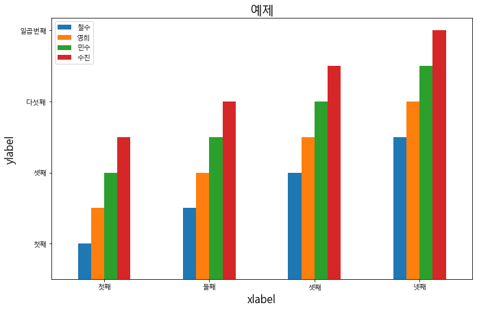
# x축 범위설정
df.plot.bar(figsize=[11,7])
plt.title('예제',fontsize=18)
plt.xlabel('xlabel',fontsize=16)
plt.ylabel('ylabel',fontsize=16)
plt.xticks([0,1,2,3],['첫째','둘째','셋째','넷째'],fontsize=10,rotation=0) #rotation으로 정상적인 각도로 출력할 수 있다.
plt.yticks([1,3,5,7],['첫째','셋째','다섯째','일곱번째'])
plt.xlim([-1,4]) #x축 범위 설정
plt.show()
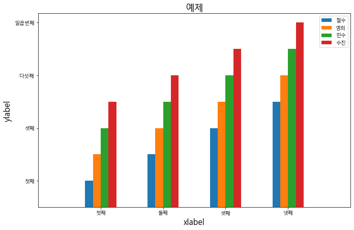
# y축 범위설정
df.plot.bar(figsize=[11,7])
plt.title('예제',fontsize=18)
plt.xlabel('xlabel',fontsize=16)
plt.ylabel('ylabel',fontsize=16)
plt.xticks([0,1,2,3],['첫째','둘째','셋째','넷째'],fontsize=10,rotation=0) #rotation으로 정상적인 각도로 출력할 수 있다.
plt.yticks([1,3,5,7],['첫째','셋째','다섯째','일곱번째'])
plt.xlim([-1,4]) #x축 범위 설정
plt.ylim([-1,8]) #y축 범위 설정
plt.show()
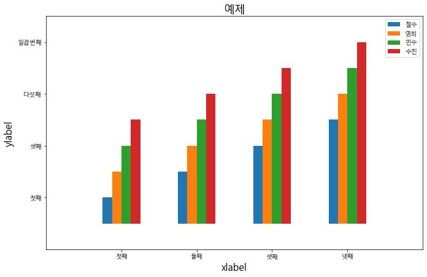
# 시리즈 시각화
# 데이터프레임 열 = 시리즈
df['철수']
0 1
1 2
2 3
3 4
Name: 철수, dtype: int64
# 선그래프
df['철수'].plot()
plt.show()
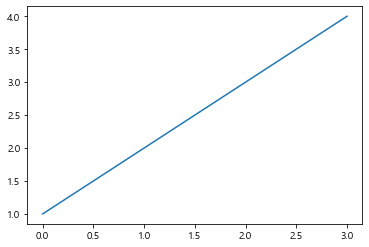
# 막대그래프
df['철수'].plot.bar()
plt.show()

# 가로막대그래프
df['철수'].plot.barh()
plt.show()
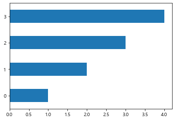
# 히스토그램(구간설정)
df['철수'].plot.hist(bins=range(1,6,1))
plt.show()
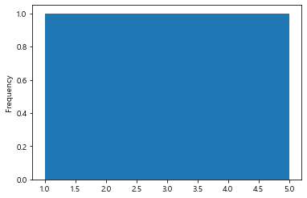
# 차트에 옵션 추가하기
df['철수'].plot.bar()
plt.show()
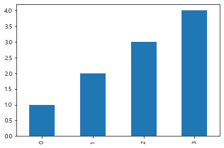
df['철수'].plot.bar(figsize=[10,6])
plt.title('예제',fontsize=18)
plt.xlabel('xlabel',fontsize=16)
plt.ylabel('ylabel',fontsize=16)
plt.xticks([0,1,2,3],['첫째','둘째','셋째','넷째'],fontsize=10,rotation=0) #rotation으로 정상적인 각도로 출력할 수 있다.
plt.yticks([1,3,5,7],['첫째','셋째','다섯째','일곱번째'])
plt.xlim([-1,4]) #x축 범위 설정
plt.ylim([-1,8]) #y축 범위 설정
plt.show()
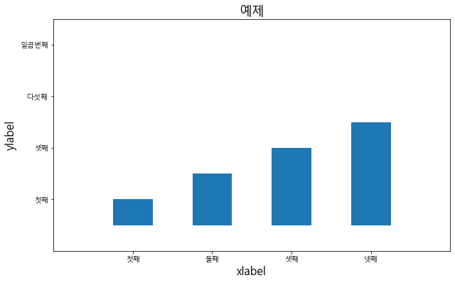